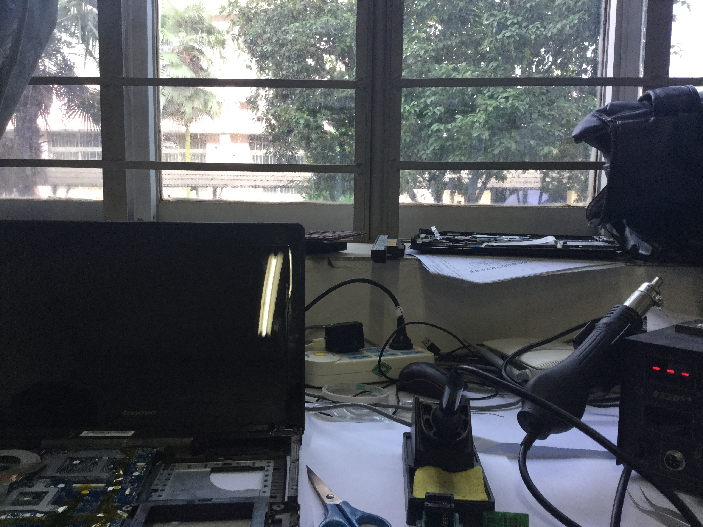

前言
昨天，研究电脑刷的第三方BIOS，因为有些选项找不到资料，于是手动试，然后把面板颜色从18bit调到24bit后，电脑又跪了！！
 黑屏，听声音输完BIOS密码就直接死机，于是赶紧拆机拆主板电池。
黑屏，听声音输完BIOS密码就直接死机，于是赶紧拆机拆主板电池。
 依然没用，只能今天去再用编程器烧写。
依然没用，只能今天去再用编程器烧写。
开始折腾
准备工具：焊台，其他辅助工具，编程器，一台能用的电脑 工具和原厂镜像打包下载 
这是直插式的SOP-16烧录座,不用再焊来焊去了

贴上隔热胶带，防止损坏其他元件

这是双BIOS的主板，先用风枪以370的温度，风速3，把右边那个4MB的SOP-8闪存吹下，8秒左右。

然后放在烧录座上，写入原厂固件。

再吹下另一个2MB的闪存，写入对应的固件


刷入2.07版未写保护的BIOS，方便刷入自定义的固件

然后进DOS重新刷之前备份好的解锁版BIOS，GPU超频，除去了网卡白名单
 刷EC
刷EC

大功告成！ 再也不作死了！这不是第一次弄坏BIOS了，下次再作死就，就。。。（〃｀д´ ) ?
 CC BY-NC-SA 4.0
CC BY-NC-SA 4.0